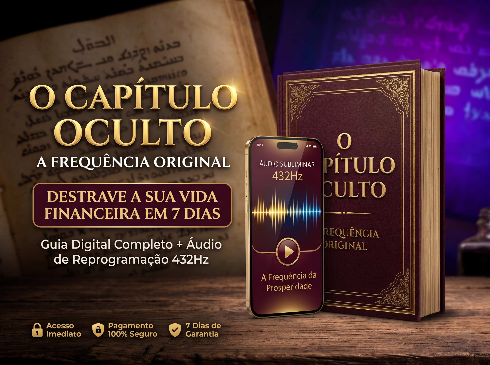

O segredo não era apenas o que estava escrito. Mas a frequência exata em que as palavras vibravam.
Deixe-me dizer uma verdade libertadora: A culpa não é sua. Nem da sua fé.
Estudos recentes em neurociência provam que o estresse de não saber como pagar as contas amanhã, o medo e a ansiedade forçam o seu cérebro a operar em Ondas Beta Altas. Essa é a frequência do caos e da escassez.
Enquanto a sua mente vibrar nessa frequência, você não consegue enxergar oportunidades, toma decisões ruins com o dinheiro e, sem perceber, repele a prosperidade. É como tentar ouvir uma rádio de paz sintonizado em uma estação de ruído.
Em 2023, o cientista Grigory Kessel usou luz ultravioleta e encontrou um manuscrito apagado há 1.500 anos no Vaticano. Eram as palavras originais de Mateus, em siríaco antigo.
Porque aquela versão original não era apenas um texto religioso. Era uma instrução vibracional. Ela guardava o segredo prático que os primeiros cristãos usavam para atrair prosperidade e descanso mental. Um segredo ocultado para manter o povo sob controle e medo.
A grande revelação não está apenas em ler, mas em vibrar na sintonia daquelas palavras. Nós isolamos a intenção desse manuscrito e gravamos em um áudio na exata Frequência de 432Hz (a Frequência do Universo). Ela desliga as ondas de escassez do seu cérebro.
Tudo o que você precisa fazer é dedicar 15 minutos do seu dia. Você vai ler o guia revelado e ouvir o Áudio Subliminar antes de dormir.

Se fôssemos cobrar o valor real por esse destrave mental e financeiro, R$ 97,00 seria muito barato.
Mas hoje, de R$ 97,00 por apenas
Pagamento único. Acesso imediato no seu e-mail.
SIM, QUERO ACESSAR O MATERIAL SEGURO AGORA Sem mensalidades. Sem taxas ocultas. Pagamento seguro pela Cakto.Seu risco é absolutamente zero. Acesse o material hoje, ouça o áudio esta noite. Se você não sentir uma paz profunda e não notar a sua visão financeira clarear nos próximos 7 dias, nós devolvemos cada centavo do seu dinheiro. Sem perguntas.
Não. Não prometemos que você vai ganhar na loteria ou ficar rico da noite para o dia. Este é um método de destrave mental e espiritual baseado em frequências sonoras e textos milenares para tirar sua mente do estado de escassez, permitindo que você tome melhores decisões financeiras e atraia boas oportunidades.
É muito simples. Você lerá o Guia em PDF (que leva menos de 15 minutos) para entender as chaves do manuscrito. Durante a noite, ao deitar, você colocará o Áudio de 432Hz para tocar. Você pode até adormecer ouvindo.
Assim que o seu pagamento for aprovado (no PIX leva menos de 1 minuto), o sistema envia automaticamente para o seu e-mail o link para baixar o E-book PDF e o Bônus em Áudio MP3.
Totalmente. O pagamento é processado pela Cakto, uma das maiores e mais seguras plataformas de pagamentos do Brasil. Seus dados estão blindados e protegidos.